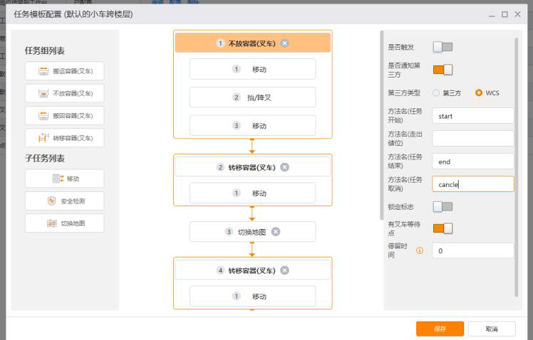
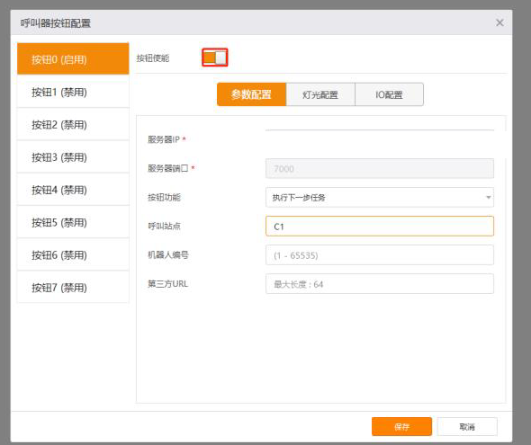
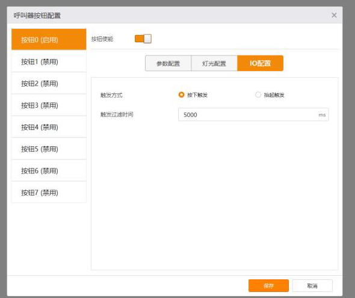
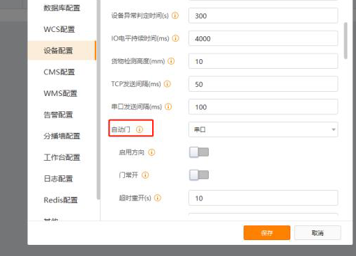
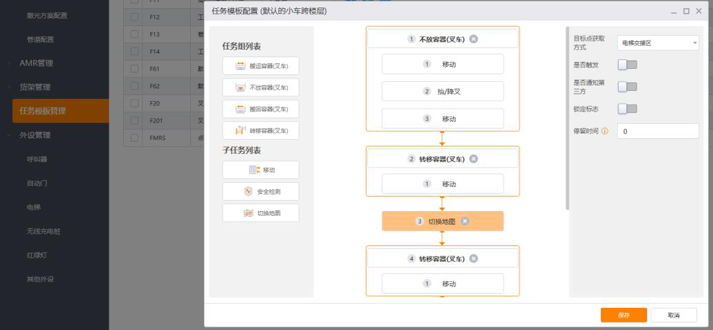

外设对接：呼叫器、自动门与电梯配置
外设经 WCS 转发而非直连调度系统，链路没搞清就填第三方地址，任务常执行完却不结束。呼叫器参数、自动门框选、电梯启用，以及 F62 与 F20 加 F201 两套模板的差异，都给出配置与联调路径。
硬件与外设目录
适用于呼叫器、自动门、电梯等外设联调的现场人员，内容据内部操作手册 V1.1 归纳；协议与模板编号随版本演进，实际接线和报文请按现场设备核对。
链路：外设为什么先接 WCS
默认情况下，外设与调度系统不是直连的：外设先通过 TCP 与 WCS 对接，WCS 再通过 HTTP 转发给调度系统。这种链路下配置要点只有一条：
- 任务模板里的第三方类型选 WCS；平台内已内置路径信息，无需填写 WCS 的 IP / 路径。
- 只有当外设需要与调度系统直接通信时，才按具体第三方填写地址类信息。
电梯尤其要先确认：是 WCS 与电梯 PLC 通信，还是第三方直接与 PLC 通信。前者第三方类型选 WCS，后者需要另配第三方 IP、端口与 URL 路径，两者不能混。
任务模板：四类通知的方法名
以任务模板 F62 为例。任务过程中会向外发四类通知，是否发、发给谁、方法名叫什么，都在模板的「通知」区配置：
| 参数 | 取值 / 说明 |
|---|---|
| 是否通知第三方 | 开启 |
| 第三方类型 | WCS（走 WCS 转发时） |
| 方法名（任务开始） | 与第三方协商确定，例如约定为 start |
| 方法名（走出储位 / 任务完成 / 任务取消） | 参照任务开始通知配置，方法名各不相同，同样协商后填 |

方法名不是固定值，必须与第三方开发对齐后再填；四类通知用错一个，对方就可能收不到完成回执，任务表现为「执行完但不结束」。
呼叫器：添加与按钮功能三选一
- 进入「系统模型 > 外设管理 > 呼叫器」，点新增。
- 填写编号、名称、IP 地址，与现场设备一致。
- 在「呼叫器按钮配置」中，逐个按钮设置「按钮使能」与「按钮功能」。
| 按钮功能 | 适用场景 | 关键字段 |
|---|---|---|
| 执行下一步任务 | 固定工位「叫车继续走」 | 呼叫站点 = 下一步要到达的点位 |
| 生成任务单 | 按模板生成一张新任务 | 任务单类型 = 具体任务模板；站点集合支持点到点 / 点到区域 / 点到策略 |
| 自定义 | 调用平台对外开放接口的个性化需求 | 方法名 + 该接口所需的属性逐项添加 |

按钮功能一旦选定，三个页签（参数、灯光、IO）都要按同一场景配齐，只配参数会出现按下无响应或灯态不对。
呼叫器：参数 / 灯光 / IO 三页配置
以「执行下一步任务」为例，三页按顺序配：
- 参数配置：按钮功能选「执行下一步任务」，呼叫站点填下一步要到达的点位；服务器端口为默认值不用改。
- 灯光配置：按手册给定配置点亮 / 熄灭规则（呼叫中、已接单等状态），保持默认即可。
- IO 配置：设置触发方式（按下触发 / 抬起触发）与触发过滤时间（示例 5000 ms），过滤时间用于抑制连按重复触发。

与天线越近的按钮序号越小，最靠近天线的按钮序号为 0。序号排错会出现「按 1 号键实际触发 3 号位」的错乱。
呼叫器：生成任务单与自定义
生成任务单：按钮功能选「生成任务单」，任务单类型选具体任务模板，站点集合支持点到点、点到区域、点到策略三种方式；灯光与 IO 页按同一套规则配置。
自定义：适用于平台对外接口已发布、但呼叫器需要个性化调用的情况：
- 按钮功能选「自定义」。
- 方法名填接口文档中的方法名。
- 逐项添加该接口需要的属性（键值），有多少填多少，少一个参数调用即失败。
- 灯光与 IO 页按手册配置。
三种功能都配完后，现场按一下按钮验证：任务要能生成 / 下一步能被触发，且平台上能看到对应记录。
自动门：添加与区域框选
- 进入「系统模型 > 外设管理 > 自动门」，新增。
- 填写编号、选择所属地图、填IP 地址与端口号，并把启用按钮打开。
- 保存后在列表中对这台门点「框选」，在地图上圈出自动门的作用区域——机器人进入该区域才会触发开关门。
区域框选是最常漏的一步。门配好但机器人到门前不减速、不开门，九成是没框选，或者框选区域压在门上、机器人根本进不去。
自动门：服务配置与报文
- 进入「服务管理 > WCS 获取能力集 > 设备配置」。
- 在设备配置中找到「自动门」，按现场实际通信协议选择对应配置项（串口 / 网络等）。
- 同一页面按需设置设备异常判定时间、IO 电平持续时间、货物检测高度、TCP / 串口发送间隔、超时重开等参数，保存。
- 报文格式参考自动门专项手册第五章，按报文规范配好后再联调开关门。

联调时先手动触发一次开关门，确认门体动作与平台状态一致，再接机器人任务。
电梯：添加、使用状态与启用
- 进入「系统模型 > 外设管理 > 电梯」，新增，填写电梯编号、IP 地址与端口、电梯名称、电梯类型。
- 接驳点数、电梯层数按实际填写；是否跨楼层按项目选择（不跨楼层时必须关掉对应开关）。
- 打开使用状态，依次选择：关联地图、接驳点、等待点、电梯关联点。
- 保存后执行「启用」——只加不启用，任务永远调度不到电梯。
| 字段 | 作用 |
|---|---|
| 接驳点 | 机器人进出电梯轿厢的落点，一台电梯可有多个 |
| 等待点 | 机器人等电梯时的停靠位，避免堵在门口 |
| 电梯关联点 | 把拓扑上的点与这台电梯绑定 |
若由第三方直接与电梯 PLC 通信，还需在任务模板中配置第三方 IP、端口与 URL 路径。
跨楼层：F62 任务模板结构
默认跨楼层模板为 F62，任务组顺序：不放容器 → 转移容器 → 切换地图 → 转移容器 → 搬回容器。

- 不放容器组：第一步「移动」配站点集合，第二步「移动」配电梯等待点；该组完成后无需通知第三方。
- 转移容器组：移动目标配电梯交接区；该步骤不设触发，等电梯开门到位后执行。
- 机器人到达目标楼层时应车头朝向电梯开门位置，便于直接进出。
- 转移组结束后再配一次「移动」到电梯等待点，最后搬回容器组把容器搬到任务目标点。
- 切换地图组负责楼层间地图切换，确保目标楼层的地图已上传。
不跨楼层：F20 主模板 + F201 副模板
机器人不跨楼层时，先在电梯配置里关闭「小车跨楼层」，再改任务模板。系统默认用 F20（叉车电梯主任务模板），并关联副模板 F201（叉车电梯副任务模板）。
| 模板 | 结构 | 关键点 |
|---|---|---|
| 主模板 F20 | 不放容器 + 搬回容器 + 移动 | 不放容器组两步：站点集合 → 电梯等待点；搬回组移动配电梯交接区，进电梯放货后退出到等待点 |
| 副模板 F201 | 移动 + 不放容器 + 搬回容器 | 目标楼层派车到电梯等待点接料；不放容器组必须打开锁定标志，等电梯开门到位再进梯接料 |
不跨楼层项目误用 F62 的「切换地图」组，任务会卡在切换地图这一步；副模板的锁定标志不打开，机器人会提前进梯、撞门。
常见问题速查
| 现象 | 先查 | 处理 |
|---|---|---|
| 任务下发成功但不执行 | 电梯是否已启用；接驳点 / 等待点 / 关联点是否配置 | 补启用与点位关联后重新下发 |
| 任务卡在某一步 | 跨楼层与单层模板是否混用；转移步骤是否被错设触发 | 按项目类型选对 F62 或 F20/F201 |
| 呼叫器按钮无响应 | IP 是否正确、IO 序号与实际按钮是否对应、按钮功能是否选对 | 逐项核对，序号以靠近天线为 0 |
| 自动门不联动 | 区域是否框选；设备配置的通信协议是否与现场一致 | 补框选、改协议后重新联调 |
| 外设改过地址后异常 | 外设配置是否同步更新 | 更新 IP/端口并重新启用相关服务 |
| 接到第三方完成回执但任务不结束 | 四类通知方法名是否与对方一致 | 按协议重新对齐方法名 |
交付收尾
- 逐台确认外设已启用（呼叫器、自动门、电梯都有独立的启用开关）。
- 把四类通知的方法名、第三方类型（WCS / 第三方）写进对接记录，与第三方签字确认。
- 保留每台电梯的接驳点、等待点、关联点清单，后续扩建或改图时按清单复查。
- 现场按「按一次呼叫器 → 自动门开 → 电梯到位 → 机器人进出梯」完整跑一遍全链路，再正式投产。
- 改过任何外设 IP 或端口后，必须同步更新配置并重新启用服务，否则会出现「改了地址就全停」。
呼叫器能生成 / 推进任务、自动门进区即开且状态回传正常、电梯启用后任务能自动调度到梯并完成跨层搬运。
上线前核对
- 第三方类型按链路选对：经 WCS 转发时选 WCS，直连时才填第三方地址
- 任务模板四类通知（任务开始 / 走出储位 / 任务完成 / 任务取消）方法名已与第三方对齐
- 呼叫器编号、IP 与现场设备一致，按钮功能（执行下一步 / 生成任务单 / 自定义）选择正确
- 呼叫器参数、灯光、IO 三个页签均已按同一场景配置，IO 触发方式与过滤时间符合现场
- 呼叫器按钮序号按与天线距离排列，最靠近天线的按钮为 0
- 自动门已填编号、所属地图、IP 与端口并启用，且已完成作用区域框选
- WCS 获取能力集中的自动门设备配置与现场实际通信协议一致，报文格式已按专项手册核对
- 电梯编号、类型、层数、接驳点数与实际一致，是否跨楼层开关与项目一致
- 电梯使用状态已打开并关联地图、接驳点、等待点、电梯关联点，且已执行「启用」
- 跨楼层项目使用 F62（不放容器 + 转移 + 切换地图 + 转移 + 搬回），转移步骤未设触发
- 不跨楼层项目使用 F20 主模板 + F201 副模板，副模板不放容器组已打开锁定标志
- 全链路已实跑一次：呼叫器触发 → 自动门开关 → 电梯到位 → 机器人进出梯 → 任务结束